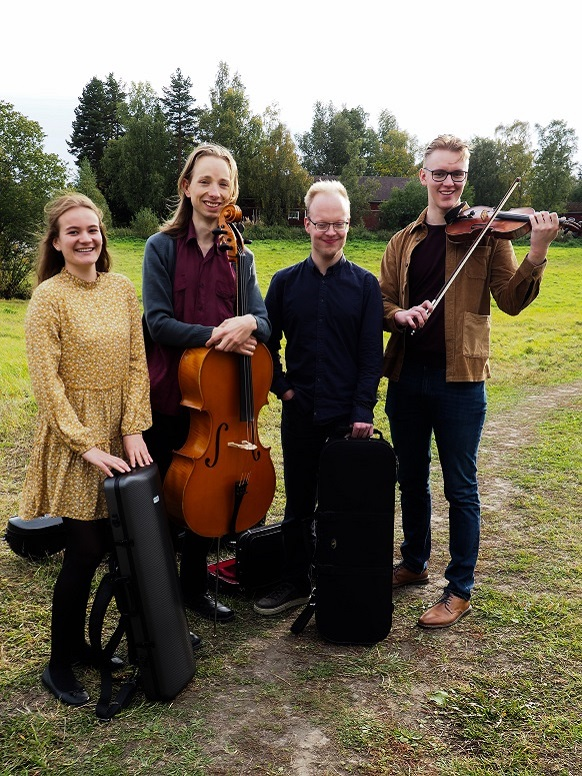

Sanna Koskimäki

English
/ Suomi
Sellisti Vertti Viitasaari
üìß viitasaari.vertti@gmail.com / ☎ 050 345 3950 / üì∏ @vviitasaari
üìß viitasaari.vertti@gmail.com / ☎ 050 345 3950 / üì∏ @vviitasaari